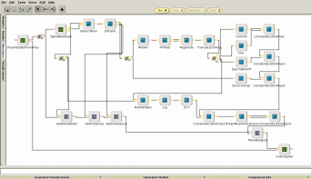

Advances in speech recognition over the years have been aided by the availability of a number of freely available toolkits such as HTK, ISIP and the Sphinx family of recognition engines. Just as with speech recognition, the availability of good tools will help advance the state of art of music information retrieval.
The IMIRSEL (International Music Information Retrieval Systems Evaluation Laboratory) has just issued the first release of M2K the Music-to-Knowledge toolkit. M2K is an open-sourced Java-based framework designed to allow Music Information Retrieval researchers to rapidly prototype, share and scientifically evaluate their sophisticated MIR techniques.
M2K comes with a large set of MIR specific modules, (currently oriented toward audio-content-based analysis), as well as a number of sample itineraries (an itinerary a task-oriented configuration of modules). M2K builds upon the D2K data mining framework developed by the Automated Learning Group at the NCSA.
D2K offers a visual programming environment that allows users to connect
the M2K modules to build more complex behaviors. For example, here's a
screen shot of how M2K and D2K could be used to put together a music
feature extractor that generates a set of feature vectors containing
spectral and timbral features that can be used for genre or artist
classification.

M2K has a lot of things going for it. It is open source, the code is well written by folks who understand MIR. Even in its first alpha release it contains quite a bit of very useful functionality. M2K provides bridges to other toolkits such as Marsyas, and Matlab. Perhaps most important, M2K has a tie-in to the IMRISEL which will soon be hosting a large collection of music (in audio as well as symbolic form) that will serve as a resource for MIR researchers. Such a resource is key to MIR researchers since getting access to large bodies of music can be very difficult and expensive. I'm really hoping that a toolkit such as M2K will emerge as the tool of choice for MIR researchers.

{kind=link}
{kind=link}